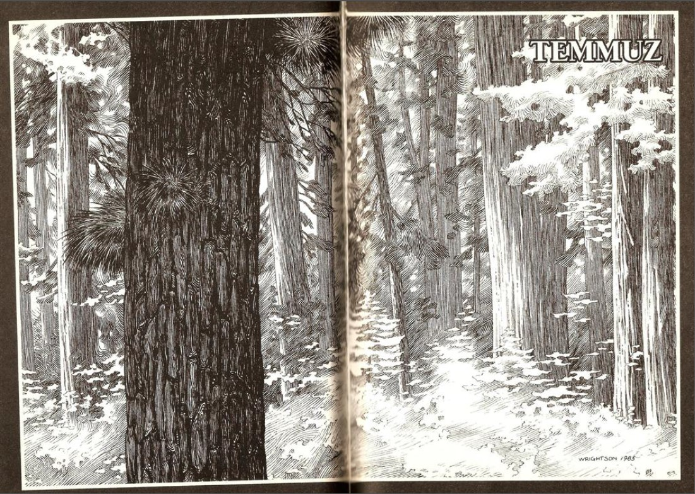
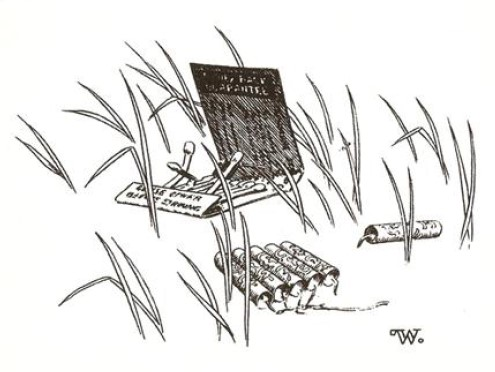
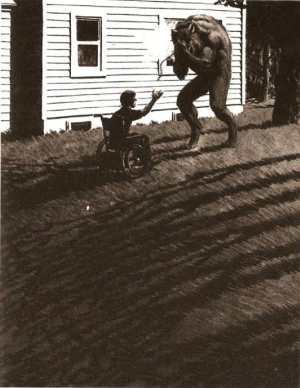

DÖRT TEMMUZ KUTLAMALARINI iptal ettiler.
Marty Coslaw bunu kendisine en yakın olan insanlara söylediğinde bile beklediği küçücük bir ilgiyi dahi göremiyordu. Bunun sebebi, belki de, onların çocuğun çektiği acının derinliğini anlayamamaları yüzündendi.
"Aptal olma," diyordu annesi Marty'e sertçe - annesi ona çoğunlukla sert davranırdı ve kadın çocuğuna böyle sert davranmasını mantıklı hale getirmek için kendi kendisine sık sık onu kötürüm diye, hayatını tekerlekli bir sandalyenin üzerinde geçirecek diye şımartmaması gerektiğini söylerdi.
"Bir sonraki yıla kadar bekle" diyordu babası, sırtını sıvazlayarak. "İki katı daha iyi olacak! Lanet olası iki katı daha iyi! Göreceksin, küçük ahbap! Hey, hey! "
Herman Coslaw, Tarker's Mills ilkokulunun beden eğitimi öğretmeniydi ve oğluyla hep Marty'nin düşündüğü gibi Koca Ahbap sesiyle konuşurdu. Bir de çok sık "Hey, hey!" hissediyordu - onun Dört Temmuzu- onların öldürdüğü Dört Temmuz.
Kendisini anlayan tek kişi, aileyle beraber yenen, som balığı ve taze bezelyeden oluşan yemeğe katılmak için sabahın geç saatlerinde kasabaya inen Al Dayı'ydı. Öğle yemeğinden sonra, üzerinden su damlayan mayosuyla verandada dikilerek (diğerleri, evin diğer tarafında yeni yapılmış havuzda gülüşüp yüzerlerken) Marty'yi çok içten bir şekilde dinlemişti.
Marty sözlerini bitirdi ve endişeyle Al Dayı'ya baktı.
"Ne demek istediğimi anlıyor musun? Anlıyor musun? Bunun Katie'nin söylediği gibi kötürüm olmakla ya da Büyükbabamın düşündüğü gibi havai fişekleri Amerika'yla bağdaştırmakla hiçbir ilgisi yok. Doğru olan bu değil. Bir şeyi bu kadar uzun süre bekliyorsun ve ... Victor Bowle ya da herhangi bir sersem meclis üyesinin çıkıp onu senin elinden alması hiç doğru değil. Bu gerçekten ihtiyaç duyduğun bir şeyse doğru değil. Anlıyor musun?"
Al Dayı Marty'nin söylediklerini düşünürken uzun ve acı verici bir sessizlik oluştu. Marty'nin havuzun derin tarafındaki tramplenin sesini ve babasının "İyi görünüyor, Kate! Hey, hey! Geeeerçekteeeen . . . iyi!" diye coşkuyla kükrediğini duymasına yetecek kadar uzun bir sessizlikti.
Sonra Al Dayı sakin bir şekilde konuştu: "Elbette anlıyorum. Sanırım yanımda senin için bir şeyler var. Belki kendi Dört Temmuz'unu kutlayabilirsin."
"Kendi Dört Temmuzum mu? Ne demek istiyorsun?"
"Gel, arabama gidelim Marty. Yanımda bir şey var . . . haydi gel sana göstereyim." Marty ona daha ne demek istediğini soramadan adam evi çevreleyen beton yolda uzun adımlarla yürümeye başlamıştı.
Marty'nin tekerlekli sandalyesi havuzun seslerinden uzaklaşıp vızıldanarak araba yoluna doğru ilerledi. Su şıpırtılarından, kahkaha seslerinden, tramplenin titreşen kaapuum'undan uzağa. Babasının gürleyen Koca Ahbap sesinden uzağa. Marty'nin zar zor duyabildiği tekerlekli sandalyesinin sesi alçak ve değişmeyen bir homurtu gibiydi - bütün yaşamı boyunca, bu ses ve emniyet kemerinin şıkırtısı çocuğun hareketlerinin müziği olmuştu.
Al Dayı'nın arabası düşük gövdeli üstü açılıp kapanabilen spor bir Mercedes'ti. Marty, anne ve babasının bunu onaylamadığını biliyordu (annesi araba hakkında bir seferinde, küçük, sert bir burun kıvırmayla "yirmi sekiz bin dolarlık ölüm tuzağı" diye bahsetmişti) ama Marty ona bayılıyordu. Bir keresinde Al Dayı onu Tarker's Mills'i çapraz çizgiler halinde kesen arka yollarda bir gezintiye çıkarmış ve çok hızlı sürmüştü - yetmiş, belki seksen. Marty'e kaçla gittiklerini söylemezdi. "Eğer bilmezsen korkmazsın," demişti. Ama Marty zaten korkmuyordu. Sürekli güldüğü için ertesi gün karnı ağrımıştı.
Al Dayı arabasının torpido gözünden bir şey çıkardı ve Marty yaklaşıp durduğunda onun kötürüm bacakları üzerine selofana sanlı kocaman bir paket koydu. "Al bakalım, evlat," dedi. "Mutlu Dört Temmuzlar."
Marty'nin ilk gördüğü, paketin etiketindeki Çince, egzotik işaretlerdi. Sonra içinde ne olduğunu gördü ve kalbi göğsünün içinde sıkışır gibi oldu. Paket havai fişeklerle doluydu.
"Şu piramide benzeyenlerin adı Twizzer," dedi Al Dayı.
Sevinçten sersemleşen Marty, konuşmak için dudaklarını oynattı ama ağzından hiçbir şey çıkmadı.
"Fitilleri ateşle ve yerleştir, bir ejderin nefesindeki kadar rengârenk saçılıyor. Ağızlarından çubuklar çıkan ince tüplerse şişe roketleri. Onları boş bir kola şişesine koy ve yukarı fırlasınlar. Küçük olanlar fıskiyeler. İki tane de havan maytabı var ... ve elbette bir paket de torpil. Ama iyisi mi sen bunları yarın ateşle."
Al Dayı havuzdan gelen gürültülere bir bakış attı.
"Teşekkür ederim!" diyebildi en sonunda Marty zorla soluyarak. " Teşekkür ederim, Al Dayı!"
"Annene sakın bunları nereden aldığın konusunda bir şey söyleme. Kör bir ata baş sallamak göz kırpmak kadar iyidir, doğru değil mi?"
"Doğru, doğru," diye geveledi Marty, baş sallamanın ya da göz kırpmanın havai fişeklerle ne ilgisi olduğu hakkında bir fikri olmasa da. "Bunları istemediğine emin misin, Al Dayı?"
"Daha fazlasını bulabilirim," dedi Al Dayı. "Bridgton'da tanıdığım biri var. Hava kararana kadar çalışıyor olacak." Elini Marty’nin başına koydu. "Herkes uyuduktan sonra Dört Temmuzunu kutlayabilirsin. Ses çıkaranları da fitilleyip herkesi uyandırma. Ve Allah aşkına sakın elini falan havaya uçurma çünkü o zaman ablam bir daha asla benimle konuşmaz."
Sonra Al Dayı güldü ve arabasına atlayıp kükreyen bir motor sesiyle uzaklaştı. Marty'e hoşça kal der gibi elini kaldırdı ve Marty hâlâ kekeleyerek teşekkür ederken gözden kayboldu. Ağlamamak için yutkunup dururken bir süre öylece dayısının arkasından bakakalmıştı. Sonra havai fişek paketini gömleğinin içine sokup sandalyesiyle vızıldayarak odasına gitti. Daha şimdiden gecenin gelmesini ve herkesin uyumasını bekliyordu.
O gece yatağa ilk giden o olmuştu. Annesi içeri girip (oğlunun çarşafın altındaki sopa gibi bacaklarına bakmadan sertçe) bir iyi geceler öpücüğü verdi. "İyi misin Marty?"
"Evet, anne."
Kadın daha fazla bir şey söyleyecekmiş gibi duraksadı ama sadece başını salladı. Gitti.
Kız kardeşi Kate içeri girdi. Kız onu öpmezdi; sadece başını Marty'nin boynuna yaslar ve böylece Marty onun saçındaki klor kokusunu alabilirdi. "Gördün mü? Her zaman sadece bir kötürüm olduğun için istediklerini alamazsın," diye fısıldadı kız.
"Ne aldığımı bilsen şaşırırdın," dedi yumuşak bir sesle Marty, Kate çıkmadan önce bir süre ona şüpheyle baktı.
Son olarak babası gelip yatağının kenarına oturdu. Gürleyen Koca Ahbap sesiyle konuşuyordu. "Her şey yolunda, değil mi koca adam? Erkenden yatıyorsun. Gerçekten erken."
" Sadece kendimi biraz yorgun hissediyorum, baba "
"Tamam." Marty'nin sakat bacaklarından birine koca eliyle hafifçe vurduğunda farkında olmadan ürktü ve hızla kalktı. "Havai fişekler için üzgünüm, sadece bir sonraki yıla kadar bekle. Hey, hey! Seni gidi üzgün patates!"
Marty’nin yüzünde küçük, gizli bir gülümseme vardı.
Sonra evdekilerin geri kalanının yatağa gitmesini bekledi. Bu çok uzun bir zaman almıştı. Oturma odasında televizyon hâlâ açıktı ve çoğunlukla Katie'nin tiz kıkırdamalarıyla artan teneke sesini andıran gülüşler duyuluyordu. Büyükbabanın yatak odasındaki tuvaletten önce bir patırtı sonra da hızla akan suyun sesi geldi. Telefonda konuşan annesi birine mutlu Dört Temmuzlar diliyordu, evet dedi, havai fişek gösterisinin kaldırılması yazık oldu, ama bu şartlar altında herkes niye böyle olması gerektiğinin farkındaydı. Evet, Marty hayal kırıklığına uğramıştı. Konuşmanın sonuna doğru bir kere güldü ve güldüğünde sesi azıcık bile sert gelmiyordu. Marty’nin yanında nadiren gülerdi.
Saat yedi buçuktan sekize, sonra dokuza gelirken selofan havai fişek paketinin hâlâ orada olduğuna emin olmak için eli arada bir yastığının altına gidiyordu. Dokuz buçuk gibi, ay odasını gözetleyecek kadar yükselip gümüş bir ışıkla içeriye aktığında ev nihayet sakinleşmeye başlamıştı.
Televizyon kapandı. Kate bütün arkadaşlarının yazın geç vakte kadar ayakta kaldıklarını söyleyip protesto ederek yatağına gitti. Sonra Marty'nin annesi ve babası oturma odasında biraz daha oturdular, konuşmaları sadece mırıltılar halindeydi. Ve ...
... ve belki de bir ara uykuya dalmış olabilirdi, çünkü muhteşem havai fişek paketine bir sonraki dokunuşunda evin tamamıyla hareketsiz olduğunu ve ayın daha da parlaklaştığını - gölge oluşturacak kadar parlak - fark ediyordu. Daha önce bulduğu bir kutu kibriti ve paketi dışarı çıkartı. Pijamasının üstünü, pijamasının altının içine soktu, paketi ve kibritleri de onun içine tıkıştırıp yataktan çıkmaya hazırlandı.
Bunlar Marty için zor hareketlerdi ama insanların düşündüğü gibi acı verici değildi. Bacaklarında hiçbir his yoktu, bu yüzden acı da olamazdı. Yatağın başını sıkıca kavrayıp kendisini oturma pozisyonuna getirdi ve bacaklarını sırayla yatağın kenarından sarkıttı. Bunu tek elle yapıyor çünkü diğer elini yatağından başlayıp tüm odayı dolaşan tırabzanı tutmak için kullanıyordu. Bacaklarını iki eliyle birden hareket ettirmeye çalıştığı bir seferde çaresizce takla atıp baş aşağı yere düşmüştü. Gürültü yüzünden herkes odasına koşmuştu. Sandalyesine oturmasına yardım edilirken biraz sarsılmış bir haldeydi. Şişmiş şakağına ve patlamış dudağına rağmen delice gülüyordu. "Seni aptal gösteriş düşkünü!" diye öfkeyle kulağına fısıldamıştı Kate. "Kendini öldürmek mi istiyorsun? Ha?" Sonra ağlayarak dışarı koşmuştu.
Yatağın kenarına oturduğunda ellerinin kuru olduğuna ve kaymayacaklarına emin olmak için üzerine sürdü. Sonra bir elini diğerinin önüne koyarak tekerlekli sandalyesine ulaşmak için tırabzanı kullanmaya başladı. Hiçbir işe yaramayan bostan korkuluğu gibi bacakları, işe yaramayan bir ağırlık, onunla beraber sürükleniyordu. Ay ışığı yere gölgesini düşürecek kadar parlaktı, parlak ve keskindi.
Tekerlekli sandalyesi frene alınmış durumda bekliyordu, güvenle ve rahatça içine yerleşti. Bir süre için nefesini tutup durdu, evin sessizliği dinliyordu. Bu gece gürültülü olanlardan hiç birini ateşleme, demişti Al Dayı ve sessizliği dinleyen Marty bunun doğru olduğunu biliyordu. Kendisinin yaptığı kutlamayı kendine saklayacak ve bunu kimse bilmeyecekti. En azından yarın birileri twizzer’ların kararmış kılıflarını, verandadaki fıskiyeleri görene kadar, sonrası önemli değildi. Bir ejderin nefesi kadar rengârenk, demişti Al Dayı. Ama Marty bir ejderin sessiz nefes almasına karşı bir yasa olduğunu sanmıyordu.
Sandalyesinin frenini bırakıp güç düğmesini çevirdi. Akünün tam dolu olduğunu gösteren küçük kırmızı göz karanlıkta parladı. Marty SAĞA DÖNÜŞ tuşuna bastı. Sandalye sağa dönmeye başladı. Hey, hey. Yüzü veranda kapılarına doğru döndüğünde, Marty İLERİ düğmesine bastı. Sandalye sessizce homurdanarak ilerledi.
Marty iki taraflı kapının mandalını açıp yeniden İLERİ'ye basarak dışarı çıktı. Muhteşem havai fişek paketini yırtarak açtı ve yaz gecesi tarafından büyülenmiş olarak bir süre durdu - cırcır böceklerinin uykulu ötüşleri, ormanın kenarındaki ağaçların yapraklarını zar zor kımıldatan hafif, mis kokulu bir meltem ve ayın neredeyse dünya dışı parlaklığı.
Daha fazla bekleyemiyor. Bir yılan çıkarıp kibritini yakıyor ve yılanın fitilini ateşe veriyor. Yeşilimsi mavi bir alevle cızırdayıp büyülü bir hal alırken, kıvrılıp kuyruğundan alevler tükürürken kendinden geçerek seyrediyor.
Temmuzun Dördü, diye düşünüyor parlayan gözlerle. Temmuzun Dördü, Dördü, mutlu Dört Temmuzlar bana!
Yılanın parlak alevi azalıyor, titrek titrek yanıp sönmeye başlıyor. Marty üçgen twizzer’lardan birini ateşliyor ve babasının uğurlu golf gömleği kadar sapsan bir ateşin fışkırışını izliyor. O sönüp gitmeden önce, yeni havuzun çevresindeki kazıklı çitin yanında büyüyen güller kadar alacakaranlık kırmızısı ışıklar saçan ikinci bir taneyi yakıyor. Şimdi rüzgârın yavaş yavaş uzaklara götürdüğü harika bir yanık barut kokusu bütün geceyi dolduruyor.
Şimdi de torpilleri çıkarıyor ve bunları ateşlemenin bir felaket olacağını fark etmeden önce onları açmış bulunuyor - torpillerin zıplayışları, kıvılcım saçışları, makineli tüfek gibi kükremeleri civardaki tüm komşuları uyandırabilirdi: yangın, sel, alarm, kaçış. Tüm bunlar, on yaşında Martin Coslaw isminde, Noel'e kadar cezalı ve gözden düşmüş bir çocuk demekti.
Kara Kediler'i kucağından ileriye itiyor, elini mutlulukla torbaya daldırıp bütün twizzer'ların en büyüğünü çıkarıyor - Birinci Sınıf bir twizzer, eğer böyle bir şey varsa. Neredeyse sıkılmış yumruğu kadar büyüktü. Korkarak ama büyük bir zevkle onu yakıp havaya fırlatıyor.
Cehennem ateşi kadar parlak kırmızı bir ışık, geceyi dolduruyor ve bu değişken, hararetli parlaklık sayesinde, Marty verandanın aşağısındaki ormanlık alanın kenarındaki çalıların kıpırdayıp aralandığını görüyor. Hafif bir gürültü işitiyor, yan öksürük, yan hırlama. Canavar göründü.
Çayırın dibinde bir süre duraklıyor, sanki havayı kokluyormuş gibi... sonra ayaklarını sürüyerek kurşuni taşlıkta, tekerlekli sandalyesinde oturan, gözleri yuvalarından fırlamış ve vücudunun üst kısmını sandalyesinin bez arkalığına doğru ittirmiş Marty'ye doğru yokuşu tırmanmaya başlıyor. Canavar kamburunu çıkarmış ama gözle görülür şekilde iki arka ayağı üzerinde yürüyor, yani bir insanın yürüyeceği gibi. Twizzer'ın kırmızı ışıkları cehennem ateşi gibi yeşil gözlerinin önünden kayıyor.
Yavaş hareket ediyor, geniş burun delikleri ritmik bir biçimde açılıp kapanıyor. Av kokusu almıştı ve avının güçsüzlüğünün kokusunu aldığı da kesindi. Marty de onu koklayabiliyor - kıllarını, terini, vahşiliğini. Tekrar homurdanıyor. Ciğer rengindeki kalın üst dudağı fildişi benzeri, kocaman dişlerini göstermek için geriye doğru kıvrılıyor. Postu mat, gümüşi bir kırmızıya boyanmış gibi.
Neredeyse Marty'e ulaşmış durumda - çocuk torpil paketini hatırladığında canavarın insan eline hem benzeyen hem de benzemeyen kocaman tırnaklı elleri, boğazına doğru uzanıyor. Yapacağının kendisi bile farkına varmadan bir kibrit çakıp ana fitile dokunduruyor. Fitil sıcak bir çizgi halinde, elinin arkasındaki tüyleri hafifçe ve kısmen yakan kırmızı kıvılcımlar tükürüyor. Kurtadam bir an için dengesini kaybedip geriliyor ve neredeyse şaşkınlık içindeki bir insan gibi homurduyor. Marty torpil paketini canavarın suratına fırlatıyor.
Torpiller önce ışıklar saçıp ardından gürültüler çıkararak patlıyor. Canavardan öfke ve acı dolu, kükremeyle karışık ince bir çığlık yükseliyor; yüzünde sıçrayan ateş ve yanık baruta doğru pençeler atarak geriye doğru yalpalıyor. Marty canavarın lamba benzeri yeşil gözlerinden birinin, bir seferde patlayan dört torpilin korkunç KA-POW'uyla birlikte dumanlar çıkararak aktığını görüyor. Canavarın çığlıkları şimdi saf acı dolu. Böğürerek pençelerini yüzüne götürüyor, Coslaw'ların evinde ilk ışıklar yanmaya başlarken geride sadece tütsülenmiş kıllarının kokusunu ve evden gelen ilk şaşkın, korkmuş çığlıkları bırakarak sırtını dönüp ormana uzanan çayıra doğru sekerek uzaklaşıyor.
"O da neydi?" Annesi biraz bile sert çıkmayan sesi yükseliyor.
"Lanet olsun, kim var orada?" diye soruyor babası pek de Koca Ahbap sesiyle konuşmayarak.
"Marty?" diye sesleniyor Kate sesi titreyerek. "Marty iyi misin?" Sesinde kötülükten eser yok.
Büyükbaba Coslaw tüm olaylar boyunca uyuyor.
Büyük kırmızı twizzer sönmeye yaklaşırken Marty tekerlekli sandalyesinde geriye doğru yaslanıyor. Twizzer'ın ışığı şimdi güneşin doğuşunun rengi gibi yumuşak ve hoş bir pembeye dönüşmüş. Çocuk ağlamak için fazla şaşkın. Ertesi gün (polis Dolunay Katili'nin Marty'i susturmak için tekrar saldırabileceği görüşündeydi) annesi ve babası onu yaz tatilinin sonuna kadar kalacağı Vermont, Stowe'daki Jim Amca ve Ida Teyze'yi ziyaret etmek üzere sepetleyecek olmasına rağmen Marty'nin içinde bulunduğu bu şaşkınlık tamamen karanlık bir duygu değildi. Marty kendisine gösterilen ilgi yüzünden içten içe gururlanıyor. Bu duygu yaşadığı şoktan çok daha güçlü. Canavarın korkunç suratına baktı ve hâlâ yaşıyordu. İçindeki basit, çocuksu sevincin yanında, kimseye, onu anlayabilecek Al Dayı'ya bile anlatamayacağı, sessiz bir sevinç de bulunuyordu. Bu sevinci yaşıyordu, çünkü her şeye rağmen havai fişekleri patlatmıştı.
Ailesi psikolojik durumundan endişe etse ve başından geçenler yüzünden ruhunda derin izler kalacak olsa bile Marty Coslaw, bunun yaşadığı en iyi Dört Temmuz kutlaması olduğuna yürekten inanıyordu.

